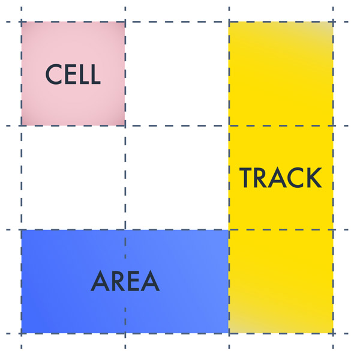
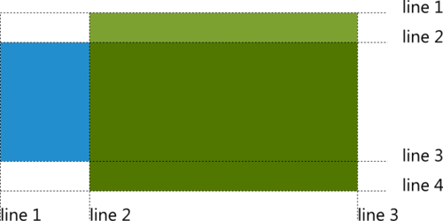

CSS Grid Layout - является ещё экспериментальной технологией. Задача, которую может решает этот модуль, очень проста и понятна: предоставить удобный механизм расположения контента по виртуальной сетке.
Модуль CSS Grid Layout определяет двумерную сетку оптимизированную для дизайна пользовательского интерфейса. В CSS Grid Layout, дети grid-контейнера могут быть расположены в произвольных местах виртуальной сетки, с заранее определенным гибким или фиксированным размером.
В отличие от старых табличных подходов, основанных на использовании тэга <table>, здесь не замусоривается семантика документа, а также есть чёткое разделение структуры документа от содержания. Grid отлично подходит для раскладки элеметов более высокого уровня нежели Flexbox. Он прекрасно подходит для определения общей системы раскладки всей страницы в целом.
Вот только некоторые из возможностей этого модуля:
легко построить любую сетку, каркас, n-колоночный макет, стандартный набор из шапки, нескольких колонок и подвала, и вообще соорудить макет любой сложности
проще манипулировать любым grid-элементом: перемещать его в любой столбец/строку сетки, растягивать/сжимать на любую ширину/высоту, а также указывать размеры, составляющие, например, сумму ширин соседних двух grid-элементов
также grid-элементами можно отдельно управлять в своих столбцах/строках сетки, например, выравнивая их по любой из четырёх сторон, по базовой линии, по середине
вы знакомы со значением repeat свойства backroud-position для повторения фона изображения; у Grid Layout тоже есть похожее значение, которое позволяет повторять части сетки при её построении
Вообще CSS Grid Layout вводит много новых понятий, которые более детально Вы можете изучить по спецификации. Так же вводится 17 новых свойств, с которыми можно ознокомиться на MDN.
Поддержка браузерами
Как видно из статистики поддержки браузерами, свойства работают только в самых новых версиях браузеров и то не во всех. Что касается IE10+, в нём поддерживается предыдущая версия CSS Grid Layout(от 2011 года) и то только с префиксами. Так что при работе с IE будьте внимательны.
Для старых версий браузров(начиная с Firefox 47 до версии 52; Chrome с версии 49 до 56) есть возможность включить поддержку CSS Grid Layout. Для этого необходимо в Chrome включить параметр «Включить экспериментальные функции веб-платформы» (вкладка chrome://flags), а Firefox включить параметр layout.css.grid.enabled (вкладка about:config).
Основные понятия
CSS Grid – это те же таблицы, однако данный инструмент вводит несколько новых терминов, которые необходимо будет помнить при работе с сетками.

Основные понятия
Единицы измерения fr задаёт размер свободного пространства. Распределение свободного пространства происходит только после того, как все «длины» или размеры строк и столбцов с контентом достигнут максимальных размеров.
По спецификации fr - это «Фактор гибкости» — коэффициент пропорциональности, который отталкивается от общего количество фракций в значениях.
Линии(lines)- линии отмечают границы других элементов. Они бывают как горизонтальные, так и вертикальные.
Треки(track) - это пространство между параллельными линиями.

Нумерация линий
Треки располагаются между линиями сетки (Grid Lines), которые, в свою очередь, находятся справа-слева и сверху-снизу от каждого трека.
Ячейки(cell) - строительные блоки сетки или по другому, это наименьшая единица на сетки.
Области (area) - прямоугольник из произвольного количества ячеек.
display: grid | inline-grid
Для работы с CSS Grid Layout необходимо создать родительский элемент и один или более дочерних.
Свойства column, float, clear, и vertical-align не оказывают никакого влияния на grid-контейнер
grid-template-columns grid-template-rows
Для создания сетки контейнеру необходимо указать свойства display:grid(или display:inline-grid), а также свойства grid-template-columns и grid-template-rows, которые задают ширина колонок и строк соответственно.
Свойство CSS являющиеся сокращенной формой свойств grid-row-gap и grid-column-gap, указывающие свободное пространство между строк и столбцов сетки grid-контейнера.
Ещё один из способов определить ширину каждой колонки, это выставить им в качестве значения ключевые слова min-content или max-content. Как можно догадаться из их названия, они определяют размер по минимальному и максимальному содержимому колонки.
Первой колонке выставлено значение min-content, она ужимается по минимальному содержимому (в данном случае это слова «ощущением»), а вторая колонка с max-content, напротив, расширяется по максимуму, чтобы вместить всё содержимое в одну строку (т.е. все слова).
Для более гибкого управления отдельными колонками разработчики спецификации создали функцию minmax(min, max).
Первое значение функции minmax() представляет минимальный размер колонки, а второе — максимальный.
Значения функции minmax() можно подставлять размеры, заданные в любых единицах длины (хоть абсолютных, хоть относительных). Так же в качестве значения можно использовать функцию calc() и значение auto.
Именованные линии
Идея именованных линий заключается в удобном и простом механизме для построения сетки при помощи направляющих.
В примере выше линия «first» идёт в списке значений первой, а значит она располагается на отметке 0px. Значение 200px между ней и следующей линией (content) задает расстояние или интервал между этими линиями, а значит, ширину первой колонки. Тоже самое происходит с остальными линиями и интервалами между ними. Вторая линия (content) находится на отметке 200px, третья (aside) в диапозоне от 400px до (1fr + 200px). Последняя линия (last) находится от 600px до (1fr + 200px + 200px) - сумма ширин всех колонок.
Заметьте в CSS-коде, что первое значение каждого свойства состоит из двух именнованных линий (first nav) и (first header). Это означает, что значение в скобках может содержать любое количество линий, идущих через пробел.
Это может пригодиться для независимого размещения контента по ячейкам сетки, где разные именованные линии на одной отметке упрощают управление блоками grid-контейнера.
Если в виде значения для grid-template-columns/grid-template-rows мы используем именованные линии, то это значение не обязательно должно начинаться (или заканчиваться) именно с именованной линии . Мы легко можем написать так: «100px [first] 100px … [last] 100px». В этом случае ширина первой и последней колонки будет по 100px.
Как можно заметить ничего особеного не произошло при добавлении именованых линий, но это пока. Чтобы познать их особеность нужно воспользоваться следующими свойствами...
Свойства grid-column-start, grid-column-end, grid-row-start, grid-row-end обеспечивают независимое расположение блока по ячекам grid-контейнера, при этом, его положения в общем потоке элементов ни как не вляет.
С помощью именнованных линий можно легко привязать grid-блок(дочерний элемент grid-контейнера) к определённой линии колонки и строки.
grid-template-ares
CSS свойство определяющие название для областей сетки. При помощи этого свойства можно легко стоить сетку grid-контейнера, объеденяя при этом несколько ячеек в одну. Суть его работы лучше всего показать на примере.
Создадим его помощью стандартную трёх колоночную страницу с footer и header.
grid-template-areas: "header header header""nav main aside""nav main aside""footer footer .";
Свойства grid-template-ares устанавливается grid-контейнеру. В качестве значения принимает шаблон из строк, идущих в кавычках через пробел. Шаблон определает количество строк и колонок в grid-контейнер и описываются области внутри него. Названия строк могут повторяться и включать в точку, указывающую как бы пустую ячейку. Если не указать точку в данном примере - то сетка порвётся.
Для того, чтобы grid-элементам понять, какие ячейки им занимать для каждого из них, нужно указать свойство grid-area.
grid-area: header;/* для HEADER */grid-area: nav;/* для NAV */
.....
grid-area: footer;/* для FOOTER */
Повторение колонок и рядов
repeat() - функция введёная в CSS Grid Layout. При помощи этой функции можно создавать повторяющиеся трэки, обладающие определённой закономерностью.